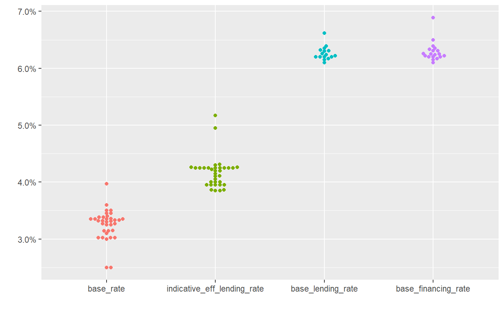
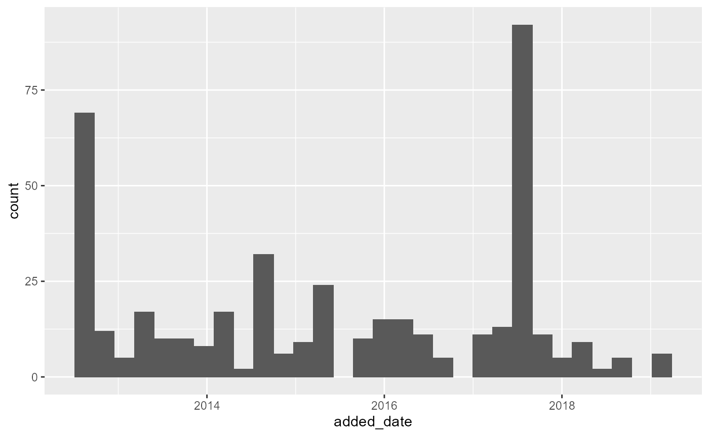

Base rate
library(bnmr)
#> BNM Open API
#> Please visit https://api.bnm.gov.my/disclaimer to view disclaimers.
#> v1
library(ggplot2)
library(tidyr)
library(dplyr)
#>
#> Attaching package: 'dplyr'
#> The following objects are masked from 'package:stats':
#>
#> filter, lag
#> The following objects are masked from 'package:base':
#>
#> intersect, setdiff, setequal, union
library(ggbeeswarm)
library(lubridate)
#>
#> Attaching package: 'lubridate'
#> The following objects are masked from 'package:base':
#>
#> date, intersect, setdiff, union
base_rate() %>%
gather(key, val, -bank_code, -bank_name) %>%
mutate(key = factor(key,
levels = c("base_rate",
"indicative_eff_lending_rate",
"base_lending_rate",
"base_financing_rate"))) %>%
ggplot() +
geom_beeswarm(aes(x = key, y = val / 100, color = key)) +
scale_color_discrete(guide = FALSE) +
scale_y_continuous(labels = scales::percent) +
labs(x = "", y = "")
#> Warning: 'base_rate' is deprecated.
#> Use 'get_base_rate' instead.
#> See help("Deprecated")
#> Warning: Removed 35 rows containing missing values (position_beeswarm).
#> Warning: It is deprecated to specify `guide = FALSE` to remove a guide. Please
#> use `guide = "none"` instead.
Consumer alerts
# TODO: make sure output from added_date column is date
consumer_alert() %>%
mutate(added_date = ymd(added_date)) %>%
ggplot(aes(x = added_date)) + geom_histogram()
#> Warning: 'consumer_alert' is deprecated.
#> Use 'get_consumer_alert' instead.
#> See help("Deprecated")
#> `stat_bin()` using `bins = 30`. Pick better value with `binwidth`.